Rønninge
Höhe: 116 cm
Größte Breite: 52 cm
Dicke rechts unten: 60 cm
links unten: 38 cm
Runenhöhe: 3,7/10/13 cm
Runeninschrift :
Soti setzte diesen Stein zum Andenken an Elef, seinen Bruder, den Sohn des Asgot mit dem roten Schilde.
89 - Rønninge - Letztes Update 23.04.2025
Listennummer: DR 202 / DK Fyn 30
Navidaten: 55.34469 10.60458 oder: Kirkestræde 2, 5550 Langeskov, Dänemark
Transliteration: suti : sati : stain : þansi : aft | ailaif : bruþur : sin : sun : ąskaus | rauþum : skialta
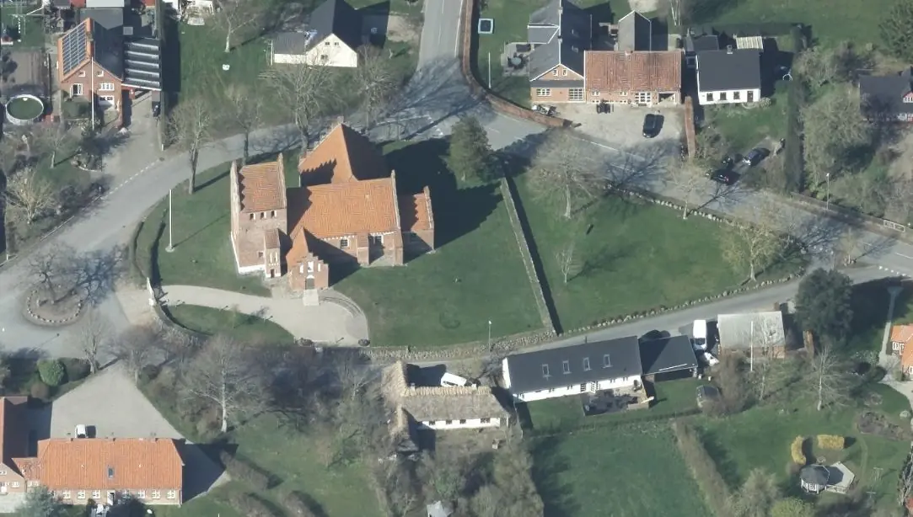
Dies ist ein Luftfoto vom 17.04.2023 von Skråfoto, das die Kirche von Rønninge zeigt. Skråfoto ist eine Webanwendung, die von Klimadatastyrelsen weltweit kostenlos bereitgestellt wird - Lizenz: CC BY 4.0 . Die Aufnahmen werden seit 2017 alle zwei Jahre erneuert und neben einer Senkrechtaufnahme wird ein Schrägbild aus jeder Himmelsrichtung angeboten, das man über eine Adresssuche aufrufen kann.
Rønninge wird erstmals 1313 in der Form "Ryninge" erwähnt. Eigentümer des Haupthofes der Pfarrei war ab 1577 der berühmte Caspar Markdanner (*1533 - 22.09.1618 aus Søgard, Königlicher Beamter, Lehnsherr auf Koldinghus - 1585-1617) - siehe auch unten mit Bildnis.
Er ließ 1586 den großen Jellingstein wieder aufrichten und ließ eine Tafel mit dieser Inschrift im Chor der Jelling Kirche aufstellen.
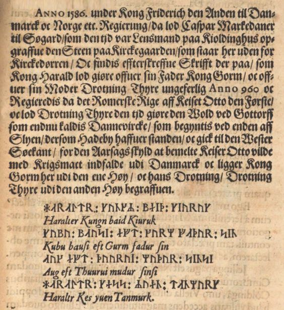
Bildquelle: Ole Worm - Danicorum Monumentorum Libri Sex - S. 329Markdanner zeigte großes Interesse an der Dorfkirche in Rønninge (Ausstattung mit Kanzel, Stühle, Grabsteine usw.). Sein Grab befand sich auch in dieser Kirche und noch zu seinen Lebzeiten war dazu eine Gruft angelegt worden. Diese wurde 1861 jedoch geschleift und die Särge wurden in die Grabkapelle nach Rønningesøgaard überführt (? - Abklärung steht noch aus). Ein elegantes Porträtrelief aus Alabaster von Caspar Markdanner, aus der Zeit um 1600, mit den Maßen 36 cm x 36 cm, findet sich in der Nordkappelle der Kirche. Es wurde 1821 renoviert und in einen schwarzen Holzrahmen eingesetzt.

Bildquelle: S. 3765 in der Abhandlung Rønninge Kirke / Danmarks kirker - Fotograf: Arnold Mikkelsen / Nationalmuseum - 2015 - Lizenz: CC-BY-SA
Das vornehme Epitaph in der Kirche für Caspar Markdanner und seine Ehefrau Sophie Oldeland (*21.08.1576 - 13.09.1639) aus hellrötlichem Kalkstein, 210 cm x 141,5 cm, wird dem Steinmetz Claus Lauritzen (1605-30) zugeschrieben.
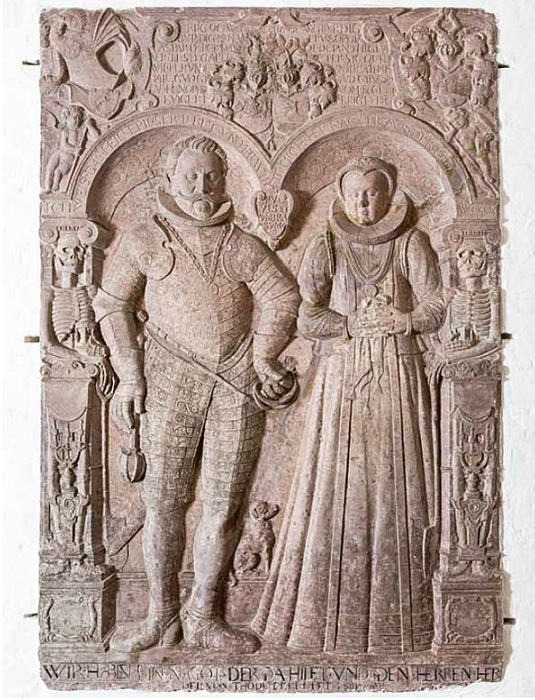
Bildquelle: S. 3770 in der Abhandlung Rønninge Kirke / Danmarks kirker - Fotograf: Arnold Mikkelsen / Nationalmuseum - 2015 - Lizenz: CC-BY-SA
In früheren Zeiten wurde das benachbarte Rønningesøgaard oft einfach Søgaard genannt. Der Hof wurde erstmals 1326 erwähnt, als Niels Jensen Rønning seinen Hof Siøgaard an seine Frau verpfändete. 70 Jahre später versuchte Margrethe I. (*1353 - 28.10.1412)
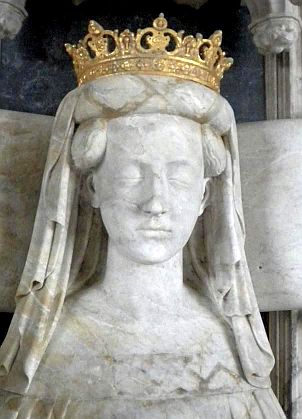
Bildquelle: Wikipedia - Lizenz: Public Domainden Hof der Krone zu unterstellen, doch der Nachkomme von Niels Jensen Gert Andersen Rønning widersetzte sich den Bemühungen. Von dem dänischen König Friedrich II. (*01. Juli 1534 - 04. April 1588, König von 1559-1588)
 Bildquelle:
Wikipedia - Lizenz:
Public Domain
Bildquelle:
Wikipedia - Lizenz:
Public Domain
bekam Caspar Markdanner den Rønningesøgaard 1577 als Belohnung für seine Dienste geschenkt. Mit knapp 60 Jahren heiratete Markdanner am 09.04.1592 die 15-jährige Sophie Oldeland (*21.08.1576 - 13.09.1639) und sein Interesse an Rønningesøgaard wuchs. Er begann mit dem Bau eines repräsentativen zweistöckigen Herrenhauses mit Gewölbekeller und herrlichem Blick über den See. Er ließ das Erbrecht dahingehend ändern, dass die Krone nur noch für den Fall ein Vorkaufsrecht hatte, wenn er keine Erben hinterließ. 1618 starb er auf Rønningesøgaard, das die Witwe Sophie Oldeland und der Sohn Frederik Markdanner (*08.06.1593 - 07.06.1639) gemeinsam weiterführten.
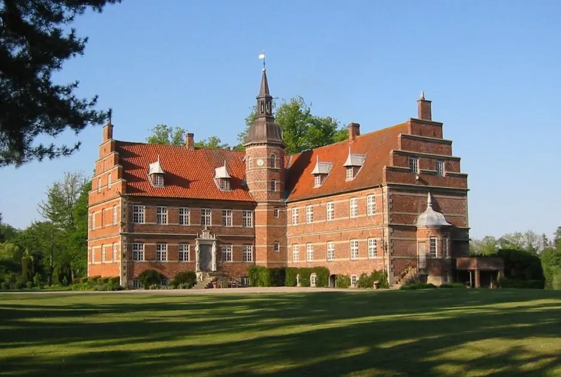
Bildquelle: Bent C. Bille Brahe Selby (heutiger Gutsbesitzer) über Wikipedia - Lizenz: CC-BY-SA
Bei meinem letzten Besuch der Kirche / Runenstein am Sonntag, 28. August 2016, habe ich diese Fotos gemacht:
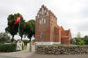 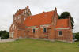 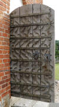 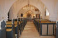 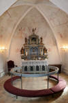 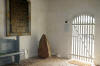 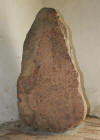
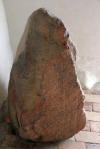 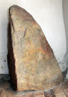 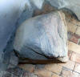
Zuvor war ich erstmals am Samstag, 06.08.1988, vor Ort und stand leider vor einer verschlossenen Kirche. Danach war ich am Dienstag, 06.08.1991, vor Ort und konnte den Runenstein erstmals in Augenschein nehmen. Außerdem war ich noch am Freitag, 16.08.1996, an der Kirche/Runenstein.
In dem "Visitatsbog 1588 - 1604" (21v - S. 75-76) des damaligen Bischofs von Fünen, Jacob Madsen (*24.07.1538 - 24.09.1606, Bischof von 1587-1606), in dem er auf seine Besuche in Rønninge zwischen dem 26.03.1590 und dem 26. Mai 1691 eingeht, wird der Runenstein noch nicht erwähnt. Darin heißt es aber auszugsweise (übersetzt): "Die Kirche ist ziemlich groß und liegt auf einem hohen Berg... / ... frisch gekalkt im Auftrag von Caspar Markdaner ...).
Außerdem hat der Bischof zwischen den Zeilen diese Zeichnung der Kirche eingebettet.
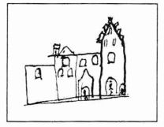
Jon Skonvig (*1600 - 1664, Pfarrer und der Runenzeichner für Ole Worm) fand den Runenstein im Jahre 1627 in einer Steinbrücke in Rønninge, worauf er herausgenommen und auf einen Steinhügel gebracht wurde.
Der Runenstein sollte aufgrund einer königlichen Verfügung vom 9.2.1652 nach Kopenhagen versandt werden. "...Hr. Henning Walchendorf til Odense Lehn; Rønninge Stenen..." - (siehe: Nordisk Tidsskrift for Oldkyndighed, Band 1, 1832, S. 325). Dieser Anweisung kam man aber in Rønninge - wie andernorts auch - offenbar nicht nach. Allerdings schreibt H. Chr. Larsen in seinem Aufsatz mit dem Titel "Rønninge-Stenen" im "Årbog for Odense og Assens Amter 1918", dass der Runenstein deswegen zunächst nach Kerteminde geschaftt worden sei, weil es die nächstgelegene Stadt mit einem Hafen war und wo sich dann aber seine Spur verlor.
Seitens Kopenhagen wurde nicht nachgehakt, da dort 1654 die Pest ausbrach, was auch Ole Worm noch im gleichen Jahr den Tod brachte.
Irgendwann verschwand er später und wurde angeblich erst 1853 im ca. 15 km nördlich gelegenen Kerteminde beim Abriss eines Hauses wiedergefunden, wo er als Grundstein gelegen hatte. Der damalige Stadtvogt (Dieses Amt wurde 1919 abgeschafft) von Kerteminde, Edvard Philip Smidth (*11.02.1807 - 20.05.1878, später Stadtvogt und Bürgermeister in Skive - link-LIVES),
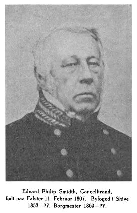
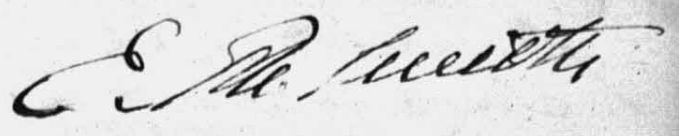
Bildquelle: Bogen om Skive 1926 - von Charles Thiesen - S. 163 (S. 170 in der pdf-Datei) - Lizenz: Public Domain - Foto wohl um 1870 aufgenommen / Seine Originalunterschrift - Quelle: Kerteminde byfoged Justitsprotokol - 1853
verhinderte, dass der Stein erneut für ein Fundament verwendet wurde und ließ ihn im alten Kirchhof austellen. Dann stand er auf einem kleinen Hügel außerhalb der Kirche, bis er am 05.05.1949 wieder nach Rønninge zurückgebracht wurde. Dort stellte man ihn zunächst auf einem kleinen Hügel bei der Kirche auf, bis er 1982 in die Kirche umgesetzt wurde.
Der Zusatz in der Inschrift "...mit dem roten Schild" ist einzigartig in der Runensteinwelt und der Inschriftteil wurde gerade in letzter Zeit - siehe Artikellink ganz unten - gänzlich anders interpretiert (Dann hätte Elef keinen roten Schild, sondern ein auffälliges Feuermal - vermutlich im Gesicht - gehabt). Die Inschrift wird in die Zeit 900 bis 950 datiert. Die Lesung beginnt links unten und verläuft bustrophed (wechselnde Leserichtung) nach rechts.
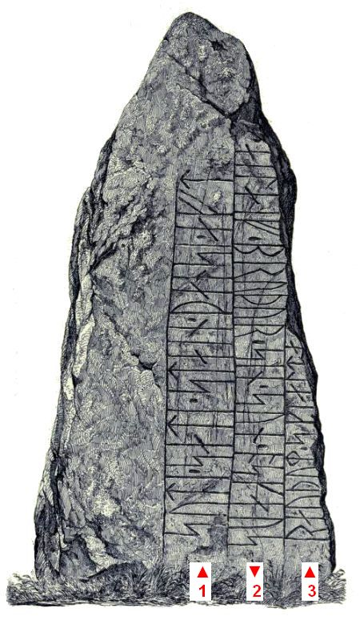
Ole Worm (*13.05.1588 - 31.08.1654, Arzt, Universalgelehrter und der Begründer der Runologie)
 Bildquelle:
Digitale Sammlung der Königlichen Bibliothek Kopenhagen -
Lizenz:
Public Domain
Bildquelle:
Digitale Sammlung der Königlichen Bibliothek Kopenhagen -
Lizenz:
Public Domain
hatte den dänischen König Christian IV. (*12.04.1577 - 28.02.1648)
 Bildquelle:
Wikipedia - Lizenz:
Public Domain
Bildquelle:
Wikipedia - Lizenz:
Public Domain
dazu bewogen am 11. August 1622 einen Brief an die Bischöfe von Dänemark und Norwegen zu senden, um darüber die Pfarrer im Land auzufordern alle Informationen zu Denkmälern, Runensteinen, Grabhügel usw. an ihn zu melden, um die älteste Geschichte Dänemarks zu beleuchten. Unterstützer oder gar treibende Kraft war wohl Christian Friis (*4. November 1581 auf Gut Krastrup in Farstrup - 01. Oktober 1639, dänischer Adliger und königlicher Kanzler)
 Bildquelle:
Wikipedia - Lizenz:
Public Domain
Bildquelle:
Wikipedia - Lizenz:
Public Domain
Der Originaltext dieses Briefes lautet auszugsweise: "Wor gunst tillforn. Wy bede Eder och wille, at I Eders mueligste flid ahnwender allewegne wdj Eders stigt att opsøge och antegne alle slags antiquiteter och documenter effter medfølgende fortegnelsis indhold, och att I saadanne med flid lader optegne och engang inden Paaske førstkommendis wdj wortt cantzelie lader indleffuere. Dermed skie wor willghe. Befalendis Eder Gud. Skreffuitt paa wortt [slott] Kiøbenhaffn, den 10. augusti anno 1622. Vnder vort signett.Christian."
Der Pfarrer - von 1606 bis 1652 - in Rønninge und Rolsted, Søren Iversen Vinum, ist wahrscheinlich der Autor dieser undatierten Rückmeldung aus Rønninge, die aufgrund dieser Königlichen Aufforderung übersandt wurde. Sie findet sich in den "Præsteindberetninger til Ole Worm: Indberetninger fra Århus, Fyns og Lunde stifter 1623-25, Band 2" auf der S. 84 (S. 103 in der pdf-Datei).
Darin schreibt er: "I Rønninge sogenn i Westerschouffs mark ligger enn høy, kaldis Steene høy, er omßat met stoere steene och enn saare stoer steen mit paa, huor der meenis enn kempe at ligge begraffuen wed nafn Rønnond, huoraff byen schall haffue sit naffnn. Wdj Ellinge Langeschow, som ligger thill Søegaard, haffuer i gammell dage standet enn herregaard eptersom stædenn endnu kiendis, i sønderlighed enn brynnd neder i jorden omsat met kampesteene, dog mesten igienschudt med jord. Somme meene, at det schall haffue været itt lidet slot wed naffn Twevad slot aff aaen der ligger der neden westen fore, som kaldis Twevad, huilcket de ville colligere vdaff en gammell dansche wiße, siungis om rege Waldemaro 4to, skall haffue hafft enn sleffred aff adell, huilcken thillspurd aff dronningen, huad hindis morgengaffue var, schall hun iblant andet haffue svared: Hand gaff mig borgh, hand gaff mig lehn, hand gaff mig Tvevad slot i Fyenn."
Er berichtet hier also u.a., dass sich in Rønninge auf dem Westerschouff Acker ein Grabhügel befindet, der von einem Streinkreis umgeben ist und in dem ein Krieger namens Rønnond begraben liegt.
Die älteste bekannte bildliche Darstellung dieses Runensteins stammt von 1627 und wurde von Jon Skonvig (*1600 - 1664, Pfarrer und der Runenzeichner für Ole Worm) gezeichnet. Dessen Aufzeichnungen haben sich in "Den Arnamagnæanske Samling - A.M. 366 fol." erhalten.
Diese Sammlung - zu deutsch: Arnamagnäanische Sammlung - hat die Aufgabe nordische, mittelalterliche Manuskripte zu erhalten und zu erforschen, die auf der Sammlung von Árni Magnússon (*13.11.1663 - 07.01.1730, Professor und Handschriften Sammler)
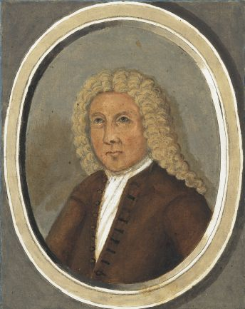
Bildquelle: Digitale Sammlung der Königlichen Bibliothek Kopenhagen - Lizenz: Public Domainbasieren. Sechs Handschriften: A.M. 366 fol. - A.M. 371 fol. haben sich darüber von Jon Skonvig erhalten.
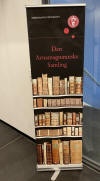
Am Mittwoch, 28.09.2022, war ich in der Universität
Kopenhagen in der Arnamagnæanske Samling
und durfte das Original -
AM 366 fol. - (damals noch nicht digitalisiert im Internet
abrufbar) in Händen halten und eingehend fotografieren. Man bat
mich aber von einer Veröffentlichung meiner Fotos abzusehen und stattdessen auf
die digitalisierte Handschrift über
www.handrit.is zu
verweisen.
Die entsprechende originale Seite 7r der AM 366 fol. kann im Internet nun über www.handrit.is angesehen werden, nachdem auch dieses Werk von Jon Skonvig in 2023 dankenswerter Weise digitalisiert wurde.
Unter die Zeichnung hat er diesen Text geschrieben: »Denne Kampesteen findiss Vdi Fÿn Vdi Aasumherrid Vdi Rønninge Vdi en steen bro denne steen er Fløtt fra en steenhoÿ hartt hoss Rønninge bÿ Vdi huilcken steen hoÿ bønderne sijger Att en Kempe ved naffn Rønne skulle ligge begraffuen, huor aff forne bÿ Rønninge skulle haffue bekommitt sit Naffn, och forne kempe skulle haffue hafft sitt sede paa en Herregaard som der ligger hart Ved: Heder Skaaussbo, huor tilforn haffuer standitt itt slott men nu er dett en Herregaard: denne steen er 2½ all lang 1 all bred.«
Übersetzung: "Dieser Felsbrocken wurde auf Fünen, im Kreis Aasum, bei einer Steinbrücke in Rønninge gefunden. Dieser Stein wurde von einem Grabhügel in einem Steinkreis in der Nähe von Rønninge entfernt. Die Bauern sagen, dass ein Krieger namens Rønne darin begraben lag, wovon der Ort Rønninge seinen Namen hat. Die alten Krieger sollen ihren Sitz an einem Platz gehabt haben, der in der Nähe liegt: Heder Skaussbo, wo früher eine Burg stand, aber jetzt ist es ein Herrenhaus: Dieser Stein ist 2½ Ellen lang und 1 Elle breit (Anm.: 1 Elle = 62,77 cm)."
Der Altertumsforscher Ole Worm (*13.05.1588 - 31.08.1654, Arzt, Universalgelehrter und der Begründer der Runologie)
Bildquelle:
Digitale Sammlung der Königlichen Bibliothek Kopenhagen - Lizenz:
Public Domain
hatte Jon Skonvig - wohl nach Eingang der Rückläufer zu dem o.a. Königlichen Befehl vom 11. August 1622 an die Pfarrer im Land - zur Bestandsaufnahme / Erfassung aller Altertumsdenkmäler durch ganz Dänemark geschickt. Ole Worm verwendete Skonvigs Zeichnung für seinen Metallschnitt in seinem Buch "Danicorum Monumentorum Libri Sex" von 1643 (S. 239).
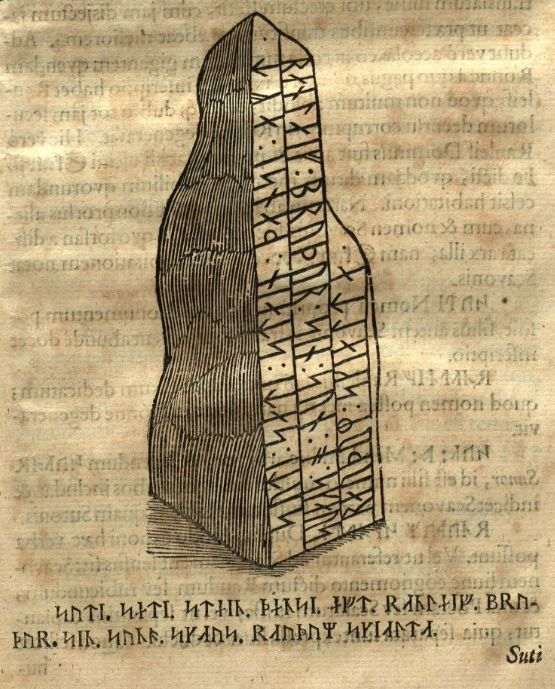
Er schreibt darin, dass der Ort seinen Namen von oder nach einem Mann namens Ronne erhalten hätte. Dessen Grabhügel hätte sich auf einem der umliegenden Felder befunden. Er beschäftigt sich natürlich auch mit der Inschrift und bringt Namen wie "Erik der Rote" / "Kaiser Barbarossa" ins Spiel.
Peder Hansen Resen hat mit dem von ihm über 20 Jahre gesammelten Material das großartige Werk "Atlas Danicus", bestehend aus letztlich 39 Folianten, geschaffen.
 Bildquelle:
Wikipedia - Lizenz:
Public Domain
Bildquelle:
Wikipedia - Lizenz:
Public Domain
Nur geringe Teile wurden aber schon zu seiner Lebzeit gedruckt. Die Folianten wurden wenige Jahre nach seinem Tod 1692 an die Königliche Bibliothek Kopenhagen übergeben. Aufbewahrt wurden sie auf dem Dachboden der Trinitatis Kirche. Dort wurden sie fleißig studiert, abgeschrieben und zeitweise ausgeliehen. Leider wurde dann ein Großteil davon beim Kopenhagener Großbrand 1728 zerstört. Es hat sich neben einigen Originalseiten - siehe Arnamagnäanische Sammlung - AM 359 fol. / AM 360 fol. / AM 361 fol. und AM 362 fol. (digitalisiert) - nur eine (verkürzte) Abschrift und außerdem Kupferstiche von etwa 200 Städteansichten aus der Vogelperspektive erhalten. Originale dieser AM 359/360/361 fol sind über die Universität Kopenhagen - Institut for Nordiske Studier og Sprogvidenskab (NorS) - AM 359 fol / AM 360 fol / AM 360 fol (Karten) / AM 361 fol - in sw abrufbar. Eine zweite (verkürzte) Ausgabe war von Vincent Lerche (*04.04.1666 - 28.07.1742, Jurist, Architekt) beauftragt worden, diese wurde aber beim Brand von Schloss Christiansborg im Jahr 1794 vernichtet.
In der Königlichen Bibliothek in Kopenhagen wird seit 1803 in der Sammlung Uldall (186 folio) diese einzige verbliebene Ausgabe, die in den 1750er Jahren durch den Hofbaumeister Laurids de Thurah (*04.03.1706 - 06.09.1759, dänischer Architekt, Baumeister, Architekturhistoriker und Topograf)
 Bildquelle:
Wikimedia - Lizenz:
Public Domain
Bildquelle:
Wikimedia - Lizenz:
Public Domain
aus verstreuten Resten des Atlas Danicus in 7 Bänden rekonstruiert worden war, aufbewahrt:
Wie diesem Titel zu entnehmen ist, gehörte dieses Exemplar vormals Adam Gottlob Graf von Moltke (*10.11.1710 - 25.09.1792, Staatsmann, Diplomat)
 Bildquelle:
Wikimedia - Lizenz:
Public Domain
Bildquelle:
Wikimedia - Lizenz:
Public Domain
Nach dessen Tod erwarb Herman Treschow (*11.12.1739 - 02.05.1797, Professor für Theologie, Pfarrer) diese Ausgabe. Peter Uldall (*29.06.1743 - 11.11.1798, Jurist, Theologe)
 Bildquelle:
Wikimedia - Lizenz:
Public Domain
Bildquelle:
Wikimedia - Lizenz:
Public Domain
wiederum kaufte sie für 170 Rigsdaler (Rigsdaler zu 24 Skilling - damals 1 ½ Mark) nach dessen Ableben. Er hatte aber nicht lange Freude daran, denn er starb ein Jahr später an einem Schlaganfall. Sein Sohn, Justizrat W. A. Uldall, schenkte diese Ausgabe der Kgl. Bibliothek im Jahr 1803, wo dieses großartige Werk noch heute verwahrt wird (Ein Band hat übrigens die Größe H/B/D von 40 cm x 29,5 cm x 9,5 cm).
Im Atlas IV. ist auf der Seite 629 ein Eintrag zu diesem Runenstein. Vom Lateinschen Original ins Dänische übersetzt: "I Aasumm Herred i Rønninge er der en sten, to og en halv alen lang og en alen bred, på hvilken der er skrevet runer som følger: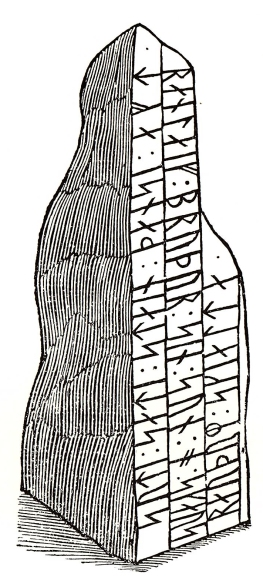
Ordene lyder: »Suti sati stain dunsi eft Ranleif brudur sin sunor Skaus raudum skialta« hvilket betyder: »Suto satte denne sten for sin broder Ranleif, søn af skjalden Røde Sklave.«
Übersetzung: "In Aasumm Herred in Rønninge gibt es einen Stein, zweieinhalb Ellen lang und eine Elle breit (Anm.: Elle = 62,77 cm), auf dem folgende Runen geschrieben sind. Die Worte lauten: Suti sati stain dunsi eft Ranleif brudur sin sunor Skaus raudum skialta, was bedeutet: Soti setzte diesen Stein zum Andenken an Elef, seinen Bruder, den Sohn des Asgot mit dem roten Schilde."
In Erik Pontoppidans (der Jüngere, *03.09.1698 - 20.12.1764, dänischer Theologe, Prediger, Historiker und Autor)
 Bildquelle:
Wikipedia - Lizenz:
Public Domain
Bildquelle:
Wikipedia - Lizenz:
Public Domain
Johan Christopher Bendz (*16.03.1753 - 14.07.1830, Pfarrer und Buchautor - link-LIVES) bringt Informationen zu dem Runenstein in seinem Buch "Efterretninger om Rønninge og Rolfsted Sogne - Odense 1820" auf den S. 99-101. Er wurde im Rønninge Præstegård als Sohn des Pfarrers geboren. Er selbst folgte dem Weg eines Priesters und löste 1778 seinen Vater als Pfarrer für die Gemeinden Rønninge und Rolfsted ab. Neben seiner priesterlichen Tätigkeit pflegte er sein historisches Interesse und veröffentlichte mehrere Bücher.
Er bringt darin zunächst die bekannten Informationen aus der Schrift von Ole Worm usw. und dass der ehemalige Grabhügel, bei dem der Runenstein gestanden hätte, 60 Ellen lang und 15 Ellen in der Breite gemessen habe (Anm.: 1 Elle = 62,77 cm). Er verweist auf seiner S. 2 auf einen Matrikel-Protokoll aus dem Jahr 1684, die dortige Bezeichnung "Rønnemae" für den Hügel und dass dieser wohl 600 bis 800 Schritte von Rønninge entfernt gelegen habe. Weiter schfreibt er: "Drei bis vier Ellen von diesem Hügel entfernt im Osten stand aufrecht ein sehr großer spitzer Stein."
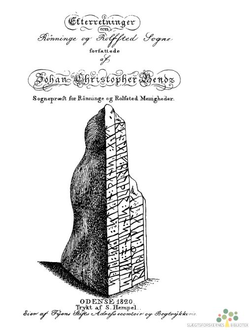
Die oben abgebildete Titelseite ziert der Schnitt nach Ole Worm.
Im Jahr 1833 hat Johan Gustav Liljegren (*27.02.1791 -02.06.1837, schwedischer Nationalarchivar und Archäologe)
 Bildquelle:
Schwedisches Reichsarchiv - Lizenz:
Public Domain
Bildquelle:
Schwedisches Reichsarchiv - Lizenz:
Public Domain
in seinem Buch "Run
- Urkunder" diesen Runenstein auf der
S. 169 unter der Nr. 1485
aufgeführt.
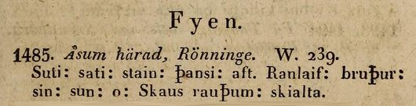
Prof. Jens Jacob Asmussen Worsaae (*14.03.1821 - 15.08.1885, dänischer Archäologe und Vorgeschichtler - link-LIVES - Bestattungsprotokoll)
 Bildquelle: Fotografie
zw. 1863-1900 von Fotograf Budtz Müller
(*26.12.1837 -
30.12.1884) -
Det Kgl. Biblioteks billedsamling - Lizenz:
Public Domain
Bildquelle: Fotografie
zw. 1863-1900 von Fotograf Budtz Müller
(*26.12.1837 -
30.12.1884) -
Det Kgl. Biblioteks billedsamling - Lizenz:
Public Domain
hat zu diesem Runenstein in seinem Notesbog IV aus dem Jahr 1850 einen Eintrag mit Zeichnung auf der S. 147 - zur Wiederaufffindung / Aufstellung - vorgenommen. Wie kann das sein, wenn der Runenstein doch erst 1853 wieder aufgetaucht ist, wie eigentlich alle übrigen Quellen behaupten?
In diesem Tagebuch IV finden sich neben dem hier behandelten Runenstein von Rønninge auch seine Aufzeichnungen zu den Runensteinen von Fjenneslev (Seite 1) / Sandby (S. 6) / Alsted (S. 8-9) - allesamt auf der Insel Seeland / Gylling (S. 10-11) - mit Datumsangabe 29. Juli 1850 in Jütland und Nørre Nærå (S. 145) auf der Insel Fünen - mit Datumsangabe 24. Juni 1850.


#/media/Datei:Fotoreproductie_van_een_schilderij,_voorstellende_een_portret_van_Christian_Friis_til_Kragerup_Christian_Friis_(til_Kragerup)_(titel_op_object),_RP-F-2001-7-742-16.jpg){kind=link}


Worsaaes Tagebücher werden heute in Kopenhagen in dem "Antikvarisk-Topografisk Arkiv" aufbewahrt, worüber ich bei meinem Besuch am 27.09.2022 Einsicht nehmen und diese Fotos anfertigen durfte.
Durch Niels Matthias Petersen (meist N. M. Petersen abgekürzt, *Nacht vom 24./25. Oktober 1791 - 11. Mai 1862, dänischer Literaturwissenschaftler zur Skandinavistik und Historiker - link-LIVES - Lebensbeschreibung auf dänisch) hat in dem Buch "Danmarks Historie i Hedenold, Band III, 1837" auf der S. 370-71 einen Beitrag
Im Teil III von 1855 geht er auf den S. 278-79 nochmals mit nahezu gleichlautendem Inhalt auf diesen Runenstein ein.
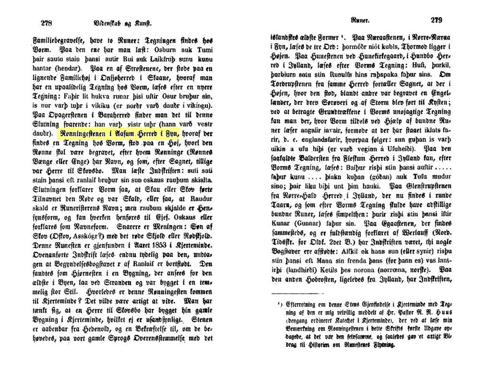
Auch er berichtet, dass der Stein nach Ole Worm bei einem Hügel für "Ronne" gestanden habe, nach dem der Ort seinen Namen erhielt. Der Sage nach sei dieser der Herr über "Skovsbo" gewesen.
Carl Christian Rafn (*16.01.1795 - 20.10.1864, Altertumsforscher - link LIVES - Bestattungsprotokoll)
 Bildquelle: Zeichner
Magnus Petersen -
Det Kgl. Biblioteks billedsamling - Lizenz:
Public Domain
Bildquelle: Zeichner
Magnus Petersen -
Det Kgl. Biblioteks billedsamling - Lizenz:
Public Domain
bekam einen auf den 22.04.1856 datierten Brief mit einer Zeichnung des Runensteins von Organist L. Andersen aus Kerteminde. Den nutzt er in seinem Werk "Antiquités de l'Orient - Monumens runographiques" von 1856 auf der S. 195 für seine Wiedergabe der Inschrift und Ausführungen zum Runenstein und dessen Inschrift.
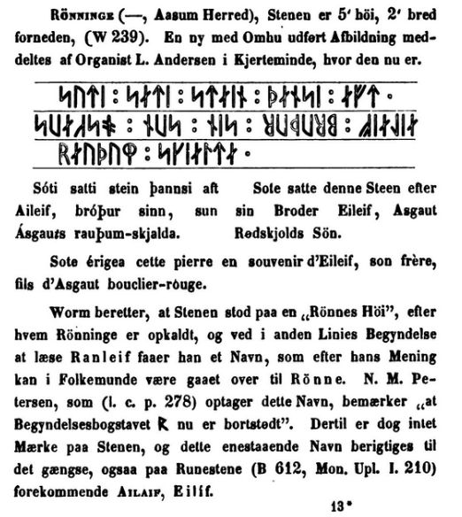
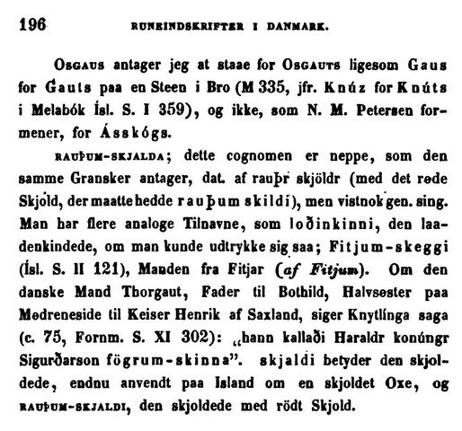
Prof. P. G. Thorsen (*07.08.1811 - 06.05.1883, Bibliothekar, Runenforscher und Historiker - link-LIVES - Artikel: Levnedsbeskrivelser af de ved Københavns Universitets Firehundredaarsfest promoverede Doktorer, Illustreret Tidende 1882, Nr. 1235 - vom 27.05.1833 / Grabstein in Varde / Eheschließung in Varde am 19. August 1848)
 Bildquelle: Fotografie
zw. 1863-1900 von Fotograf Budtz Müller
(*26.12.1837 -
30.12.1884) -
Det Kgl. Biblioteks billedsamling - Lizenz:
Public Domain
Bildquelle: Fotografie
zw. 1863-1900 von Fotograf Budtz Müller
(*26.12.1837 -
30.12.1884) -
Det Kgl. Biblioteks billedsamling - Lizenz:
Public Domain
hat seine Beschreibung zu dem Runenstein in seinem Werk "De danske runemindesmærker beskrevne og forklarede, anden Afdeling, Jyllands Runemindesmærker, II. Text, 1880" auf der S. 250 wiedergegeben. Er schreibt dort allerdings: "...og er en anselig Sten af 3 Alens Hojd...(übersetzt: ein ansehnlicher Stein von 3 Ellen Höhe...". Das passt natürlich nicht, denn 1 Elle entsprach 62,77 cm, worüber der Runenstein fast 190 cm hoch wäre. Ludv. F. A. Wimmer (*07.02.1839 - 29.04.1920, Philologe und Runenforscher) schreibt dazu in seinem Buch "Die Runenschrift" aus dem Jahr 1887 in der Fußnote 2 zur Seite 380 folgendes: "Wenn Thorsen (De danske Runemindesm. II, 2, s. 250) ihn einen ansehnlichen stein von 3 ellen höhe" nennt, muss er hier wie öfters fuss und elle verwechselt haben." Ein Fuss entsprach etwa 31,4 cm.
Die u.a. Zeichnung, die Prof. Julius Magnus Petersen (*04.09.1827 - 31.01.1917, Archäologischer Zeichner und Restaurator - link-LIVES - Bestattungsprotokoll)
 Bildquelle: Fotografie
von 1903 von Fotograf Marius Christensen
(*24.06.1874 -
25.06.1907) -
Det Kgl. Biblioteks billedsamling - Lizenz:
Public Domain
Bildquelle: Fotografie
von 1903 von Fotograf Marius Christensen
(*24.06.1874 -
25.06.1907) -
Det Kgl. Biblioteks billedsamling - Lizenz:
Public Domain
im Auftrag von Prof. P. G. Thorsen angefertigt hat, findet sich schon in dem Jahre zuvor erschienenen Buch, in "Runemindesmærkerne i Slesvig, 1864" auf der S. 267.
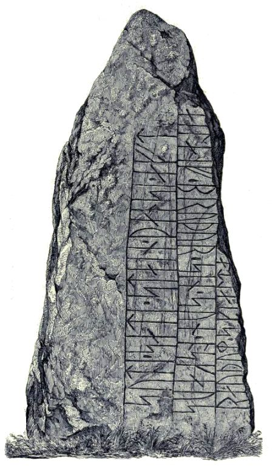
Auf der S. 269 und in der Fußnote 2 geht er textlich auf den Runenstein ein. Er schreibt dort: "... Da J. L. Rohmann 1838, i Anledning af at han havde faaet Sognekaldet der, talte med Christian 8. - dengang som Prinds endnu Guvernør over Fyn - opmuntredes han »til at gjore alt muligt« for at flnde Ronninge-Stene. Forgjæves undersøgte Rohmann imidlertid enhver storre Sten i Sogne..." - Übersetzung: Als J. L. Rohmann im Jahr 1838 anlässlich seines dortigen Amtsantritt als Pfarrer von Rønninge mit Christian 8. sprach damals als Prinz noch Gouverneur von Fünen wurde er ermutigt, alles Mögliche zu tun, um den Rønninge-Stein zu finden. Vergeblich untersuchte Rohmann jedoch jeden großen Stein in der Gemeinde."
Bei der angesprochenen Person handelt es sich um Pastor J. L. Rohmann (Jørgen Lindegaard Rohmann, *02.12.1797 -04.06.1860, Pfarrer, Historiker, Ritter des Dannebrog-Ordens - link-LIVES)
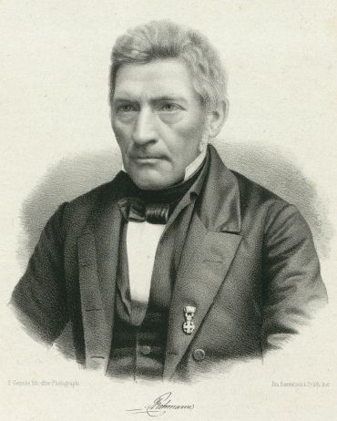
Prof. Ludv. F. A. Wimmer (*07.02.1839 - 29.04.1920, Philologe und Runenforscher - link-LIVES - Politiets registerblade - Bestattungsprotokoll)
 Bildquelle: Fotografie
zw. 1877-1900 von Fotograf Hansen & Weller -
Det Kgl. Biblioteks billedsamling - Lizenz:
Public Domain
Bildquelle: Fotografie
zw. 1877-1900 von Fotograf Hansen & Weller -
Det Kgl. Biblioteks billedsamling - Lizenz:
Public Domain
hat zu diesem Runenstein in seinem Buch - in deutscher Sprache - mit dem Titel "Die Runenschrift" aus dem Jahr 1887 auf den S. 378-82 erklärt, dass die Inschrift aufgrund seiner Runen- und der Sprachform der Inschrift von Glavendrup und von Tryggevælde/Seeland (siehe Nationalmuseum Kopenhagen). Außerdem könne man davon ausgehen, dass der "Sote" in der Inschrift wohl identisch sei mit dem "Sote" in der Inschrift von Glavendrup. Ferner könne man annehmen, dass die Runensteine vom gleichen Runenritzer geschaffen wurden: "...ein hoher Grad von Wahrscheinlichkeit spricht doch dafür...". Daneben gibt er auch diese Zeichnung von Magnus Petersen wieder.
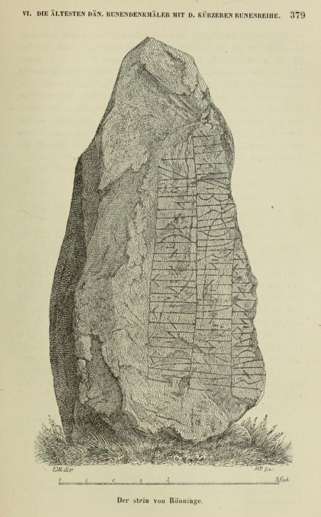
In dem großen Werk von Ludv. F. A. Wimmer mit dem Titel "De danske runemindesmærker undersøgte og tolkede af Ludv. F. A. Wimmer, Andet Bind, Runestenene i Jylland og på øerne. 1899-1901" handelt er diesen Runensteins auf den S. 397-401 ab und bringt die identische Zeichnung von Magnus Petersen auf der S. 399. Die beiden Herren haben den Runenstein persönlich vor Ort am 22. Juli 1879 untersucht. In seiner Abhandlung beschreibt er eingangs, dass der Runenstein nach einstimmiger Auskunft der Bewohner früher bei einem Grabhügel gestanden hätte, der von einem Steinkreis umgeben war. Darin sei ein Krieger namens Rönne bestattet worden, nachdem der Ort Rønninge seinen Namen hätte. Eine Zeichnung zum Querschnitt gibt er auf der S. 398 wieder.
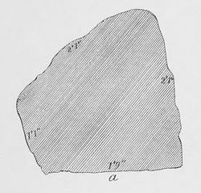
Ludv. F. A. Wimmer hat seine jahrelangen Aufzeichnungen der "Kgl. Bibliotek" in Kopenhagen überlassen. Ein Verzeichnis darüber wurde 1915 in Buchform herausgegeben - "Collectio runologica Wimmeriana: Fortegnelse over Ludv. F. A. Wimmers runologiske o.a. Samlinger i Det kgl. Bibliotek".
In seinen Unterlagen in der Königlichen Bibliothek in Kopenhagen befinden sich unter "III - Originaltegninger af de danske Runemindesmærker, udførte paa Undersøgelsesrejserne af Magn. Petersen og kontrollerede paa Stedet af Ludv. Wimmer, samt Prøvetryk af de paa Grundlag af de nævnte Tegninger, Aftryk o. s. v. til De danske Runemindesmærker" udførte Afbildninger med Wimmers Rettelser" zu dem Runenstein von Rønninge unter der Nr. 89 diese Aufzeichnungen von 1879, die ich am 27.09.2022 fotografieren durfte.


Die Zeichnung ist handsigniert von Magnus Petersen (*04.09.1827 - 01.02.1917, Archäologischer Zeichner und Restaurator) und mit Datum vom 22.07.1879 versehen.

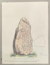
Jens Peter Trap (*19. September 1810 - 21. Januar 1885, dänischer Kabinettssekretär und topografischer Autor - link-LIVES - Bestattungsprotokoll)
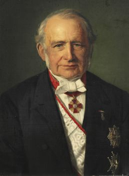
Bildquelle: Wikipedia - Lizenz: Public Domainbeschreibt das Kirchspiel Rønninge in seinem Werk "Kongeriget Danmark - 3. Udgave - 3. Bind : Bornholms, Maribo, Odense og Svendborg Amter, 1856-1906". Ab der S. 429 schreibt er über die Region. Auf den Runenstein kommt er aber bereits auf der S. 371 kurz zu sprechen: "Paa Kirkegaarden, som nu er planeret, er der ved Kirkens sydl. Side rejst en Runesten (Rønningestenen), der tidligere har haft sin Plads i Rønninge, men 1853 fandtes i Kjerteminde ved Nedbrydningen af et Hus." Übersetzung: "Auf dem nun geplanten Kirchhof wurde an der Südseite der Kirche ein Runenstein (der Rønningestenen) errichtet, der früher seinen Platz in Rønninge hatte, aber 1853 in Kjerteminde beim Abriss eines Hauses gefunden wurde."
Magnus Petersen berichtet 1909 in seinen Memoiren, die den Titel "Minder fra min Virksomhed paa Arkæologiens Omraade fra 1845 til 1908" tragen, auf der S. 50: ...Nun möchte ich aber noch einmal auf die Jahre 1855-56 zurückkommen, als Prof. P. G. Thorsen endlich ein Lebenszeichen bezüglich des erwähnten Runenwerks von sich gab. Im erstgenannten Jahr bat er mich, nach Fünen zu reisen, um Zeichnungen des Runensteins in Kjerteminde (Rønningestein) und Nørre Næraasten sowie des großen Glavendrup-Steins anzufertigen...".
H. Chr. Larsen schreibt in einem Aufsatz mit dem Titel "Rønninge-Stenen" im "Årbog for Odense og Assens Amter 1918", dass der Runenstein aufgrund der Königlichen Order vom 09.02.1652 (siehe oben) zunächst nach Kerteminde geschaftt worden sei, weil es die nächstgelegene Stadt mit einem Hafen war und wo sich dann aber seine Spur verlor. Bei ihm findet sich auf den Seiten 288/89 unter der Fußnote 2 eine Übersetzung des Lateinischen Beitrags bei Ole Worm ins Dänische. Ferner sei der betreffende Grabhügel wohl 1795 geschleift worden.
Dieses Foto fertigte Erik Moltke (*04.04.1901 - 19.10.1984, Runologe, Historiker - link-LIVES)
 Bildquelle: Scan von Buchumschlag "Runerne i Danmark og ders
oprindelse" - Erik Moltke - 1976 - Lizenz:
CC-BY-SA
Bildquelle: Scan von Buchumschlag "Runerne i Danmark og ders
oprindelse" - Erik Moltke - 1976 - Lizenz:
CC-BY-SA
am Dienstag 02.06.1931 an.
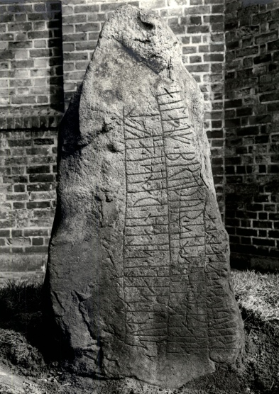
Der Digitale Sammlung des Nationalmusems Kopenhagen entnommen. Lizenz: CC-BY-SA
Im Vorfeld zu dem 2016 erschienenen Buch von Lisbeth M. Imer (*1973, Runologin am Nationalmuseum Kopenhagen) "Danmarks Runesten - en fortælling" reiste sie mit dem Fotografen Roberto Fortuna zur Bestandsaufnahme durch die Lande. Dieser hat die Runensteine mit Schräglicht aufgenommen und darüber wirklich herausragende Fotos erzielt.
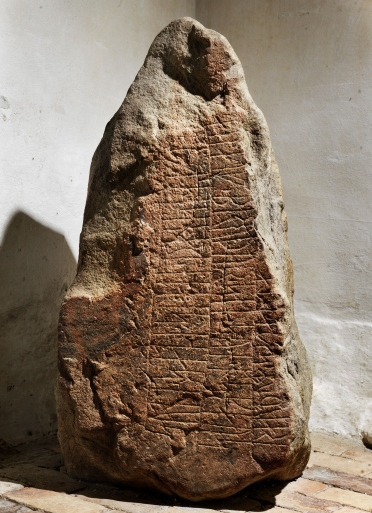
Lizenz: CC-BY-SA - Foto aus: Digitale Sammlung Nationalmuseum Kopenhagen
Diese schöne Zeichnung der Kirche aus dem Jahr 1867 stammt von Joachim Ferdinand Richardt (*10.04.1819 - 29.10.1895 in Oakland/USA, Künstler - link-LIVES)
 Bildquelle:
Wikipedia
-
Lizenz:
Public Domain
Bildquelle:
Wikipedia
-
Lizenz:
Public Domain
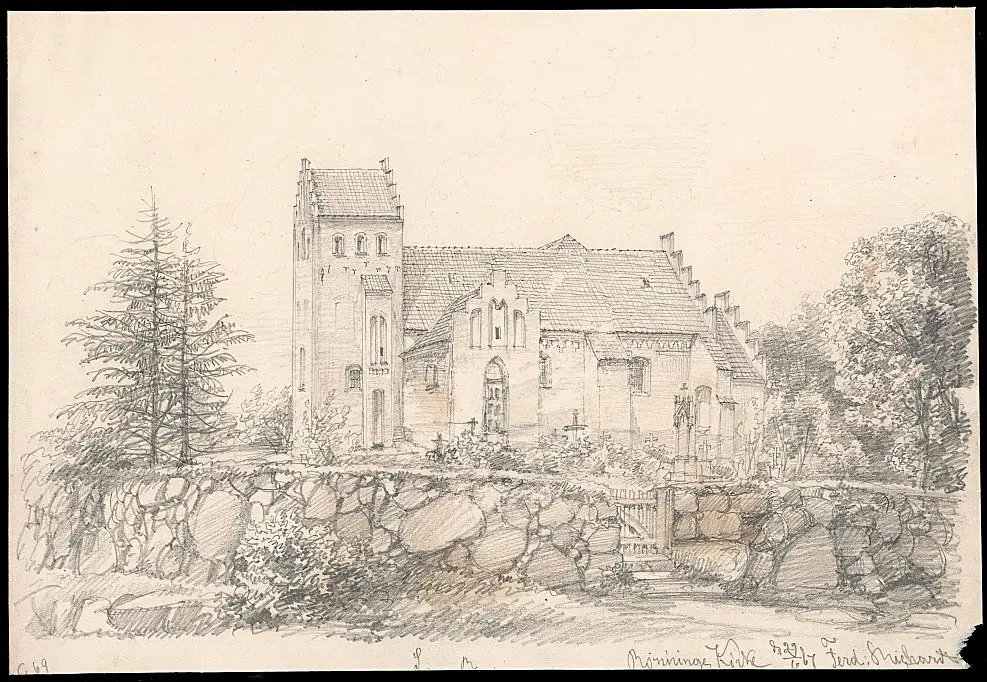
Bildquelle: Digitale Bildsammlung Nationalmuseum Kopenhagen - Lizenz: CC BY-SA 4.0
Im Internet finden sich über die Homepage der dänischen Runendatenbank hier alle Infos zu diesem Runenstein.
Der entsprechende Eintrag zu dem Runenstein in "Fund og Fortidsminder" ist hier verlinkt.
Über diesen Link finden sich zu dem Runenstein Informationen des Forschungsprojektes "Runes" der Akademie der Wissenschaften zu Göttingen.
Auf der Webseite von "Danmarks kirker" findet man zu der Kirche von Rønninge eine reich bebilderte 93-seitige Arbeit aus dem Jahr 2016.
Der dänischen Runendatenbank habe ich gerade entnommen (16.03.2021), dass sich diese Abhandlung
Källström, Magnus: Vad betyder binamnet Rauðumskialdi på Rønningestenen DR 202? (abrufbar z.B. über Google Account bei www.academia.edu)
aus dem Jahr 2013 mit der Inschrift auf diesem Runenstein befasst. Der Autor (Schwedischer Runologe und Sprachforscher) diskutiert die Bedeutung des Nachnamens "Rauðumskialdi". Aus einem Vergleich mit einem ähnlichen westskandinavischen Namen "Skiald(ar)rauðr" trägt er vor, dass sich dieser Name nicht unbedingt auf einen roten Schild beziehen muss, sondern eher auf einen auffälligen roten Fleck auf der Haut, wahrscheinlich ein Muttermal der Art "naevus flammeus" (Auch unter der Bezeichnung "Portweinfleck" bekannt - Feuermal - gutartige Hautveränderung, dunkelrote bis rötlich-violette Farbe).
Darauf weist Lisbeth M. Imer (*1973, Runologin am Nationalmuseum Kopenhagen) in ihrem Buch "Danmarks Runesten - en fortælling" aus dem Jahr 2016 auf der S. 246 auch hin.
Literaturhinweise:
Johan Christopher Bendz - Efterretninger om Rønninge og Rolfsted Sogne - Odense 1820
H. Chr. Larsen - Rønninge-Stenen - Årbog for Odense og Assens Amter 1918
Jacob Isager - Resens Atlas IV Fyn - Odense 1984
Dendrokronologisk undersøgelse af tagkonstruktion over Rønninge Kirke, Fyns Amt, NNU rapport nr. 53, 2015